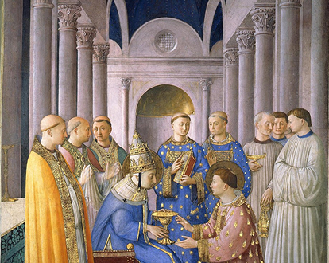

본문콘텐츠영역
About
-
About More +
Art, aside from being a credible witness to the beauty of creation, is also a tool of evangelisation. In the Church it exists above all to evangelise: through art - music, architecture, sculpture, painting - the Church explains and interprets the revelation. The Vatican Museums, built on the former Belvedere Palace and surrounding buildings, once the papal residence, are the world's largest art museum, displaying the vast art collection amassed by Pope Julius II in the 16th century. Their house centuries of art, including works by Renaissance masters like Leonardo da Vinci, Michelangelo, and Raphael.
-
The Vatican Museums must increasingly be a place of beauty and welcome. They must welcome new forms of art. They must open their doors to people from all over the world, as an instrument of dialogue between cultures and religions, a tool for peace. Not dusty collections from the past solely for the “elite” or the “learned”, but a living reality able to conserve the past in order to transmit it to the people of today, starting with the most humble.
The Palace
More +Discover the treasures of the Vatican Museums. Explore 24 exhibition halls, from the historic and iconic Sistine Chapel to Egyptian artifacts, and experience a moving blend of art and history.
Explore the treasures of the Vatican Museums, a moving experience combining art and history.
Exhibition
-
Exhibition More +
Special exhibitions held in the sacred and mystical palace offer pilgrims and tourists alike an experience that goes beyond mere viewing, including restored relics and touring concerts. Artistic and historical treasures from the world's greatest artists await you at the Vatican.
Hours & admission
More +Make a visit plan
-
Museums
- Hours
-
From Monday to Saturday
08.00 a.m. - 08.00 p.m. (final entry 06.00 p.m.) -
Every last Sunday of the month
09.00 a.m. - 02.00 p.m. (final entry 12.30 p.m.) -
Free entry
Possibility of guided tours upon reservation
-
Secret Garden of Castel Gandolfo
- Hours
-
From Monday to Saturday
08.00 a.m. - 01.00 p.m. -
Every last Sunday of the month
09.00 a.m. - 05.00 p.m. (final entry 02.00 p.m.) -
Free entry
Possibility of guided tours upon reservation
Gallery
More +A sublime space where sacred art and human creativity unite, inviting you to behold the eternal story of the Vatican.
- Pietà
- Aldobrandini Wedding
- Museus do Vaticano
- Criação do mundo
- Deposizione di Cristo
- Cappella Niccolina
- Scuola di Atene